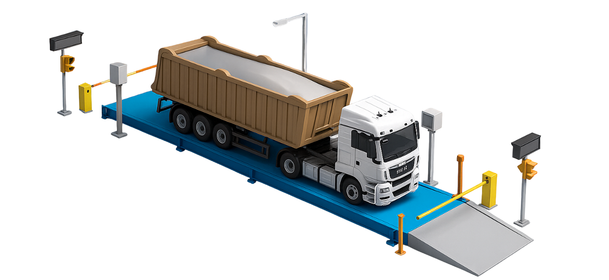

Scalemaster, gelişmiş veri işleme ve kapsamlı raporlama yetenekleriyle güvenilir bir çözüm sunar. Esnek altyapısı sayesinde taşıt kantarlarının yönetiminde tüm ihtiyaçlara uyum sağlar. Kullanıcı dostu arayüzü, renkli ve anlaşılır menü yapısı ile her seviyeden personelin kolayca öğrenip zorlanmadan kullanabileceği şekilde tasarlanmıştır.
